Calculate the temporal shift of one species' activity over two periods
mm_temporal_shift.RdThis function estimates and analyzes the temporal shift in the activity of a species between two time periods using kernel density estimation. It computes the activity distributions and determines the magnitude and direction of the shift.
Usage
mm_temporal_shift(
first_period,
second_period,
convert_time = FALSE,
xscale = 24,
xcenter = c("noon", "midnight"),
n_grid = 128,
kmax = 3,
adjust = 1,
width_at = 1/2,
format = "%H:%M:%S",
time_zone,
plot = TRUE,
linestyle_1 = list(),
linestyle_2 = list(),
posestyle_1 = list(),
posestyle_2 = list(),
...
)Arguments
- first_period
A numeric vector representing activity times in radians for the first period.
- second_period
A numeric vector representing activity times in radians for the second period.
- convert_time
Logical. If
TRUE, converts times to radians before analysis.- xscale
A numeric value to scale the x-axis. Default is
24for representing time in hours.- xcenter
A string indicating the center of the x-axis. Options are
"noon"(default) or"midnight".- n_grid
An integer specifying the number of grid points for density estimation. Default is
128.- kmax
An integer indicating the maximum number of modes allowed in the activity pattern. Default is
3.- adjust
A numeric value to adjust the bandwidth of the kernel density estimation. Default is
1.- width_at
Numeric. The fraction of maximum density at which the activity width is measured (default is 0.5).
- format
Character. Format of time input (default is "%H:%M:%S"). Used if
convert_time = TRUE.- time_zone
Character. Time zone for time conversion. Required if
convert_time = TRUE.- plot
Logical. If
TRUE, generates a plot comparing the activity distributions of the two periods.- linestyle_1
List. Line style settings for the first period's density plot. Includes
linetype,linewidth, andcolor.- linestyle_2
List. Line style settings for the second period's density plot. Includes
linetype,linewidth, andcolor.- posestyle_1
List. Marker style settings for the first period's density range. Includes
shape,size,color, andalpha.- posestyle_2
List. Marker style settings for the second period's density range. Includes
shape,size,color, andalpha.- ...
Additional arguments (currently unused).
Value
A list containing:
A tibble with:
First period range: The start and end times of active periods in the first dataset.Second period range: The start and end times of active periods in the second dataset.Shift size (in hour): The absolute difference in activity duration between the two periods.Move: A categorical description of the shift ("Forward", "Backward", "Expanded", "Contracted", etc.).
A plot (optional): A ggplot2 object visualizing the density distributions if plot = TRUE.
Examples
library(ggplot2)
# Using radians as input
first_period <- c(1.3, 2.3, 2.5, 5.2, 6.1, 2.3) # Example timestamps for period 1
second_period <- c(1.8, 2.2, 2.5) # Example timestamps for period 2
result <- mm_temporal_shift(first_period, second_period, plot = TRUE, xcenter = "noon",
linestyle_1 = list(color = "gray10", linetype = 1, linewidth = 1),
linestyle_2 = list(color = "#b70000", linetype = 5, linewidth = .5))

result
#> [[1]]
#> # A tibble: 1 × 4
#> `First period range` `Second period range` `Shift size (in hour)` Move
#> <chr> <chr> <dbl> <chr>
#> 1 06:59:32 - 10:34:58 06:25:31 - 10:12:18 0.19 Backward
#>
#> $plot
 #>
# customize the graph associated result
result$plot+
labs(color = "Periods")+
theme(legend.position = "top")
# Using time strings as input
first_period <- c("12:03:05", "13:10:09", "14:08:10", "14:18:30", "18:22:11")
second_period <- c("13:00:20", "14:20:10", "15:55:20", "16:03:01", "16:47:00")
result <- mm_temporal_shift(first_period, second_period,
convert_time = TRUE,
format = "%H:%M:%S",
time_zone = "UTC")
#>
# customize the graph associated result
result$plot+
labs(color = "Periods")+
theme(legend.position = "top")
# Using time strings as input
first_period <- c("12:03:05", "13:10:09", "14:08:10", "14:18:30", "18:22:11")
second_period <- c("13:00:20", "14:20:10", "15:55:20", "16:03:01", "16:47:00")
result <- mm_temporal_shift(first_period, second_period,
convert_time = TRUE,
format = "%H:%M:%S",
time_zone = "UTC")